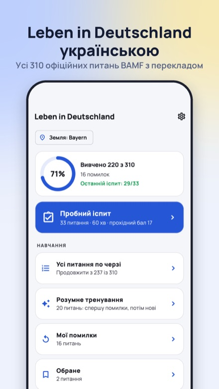
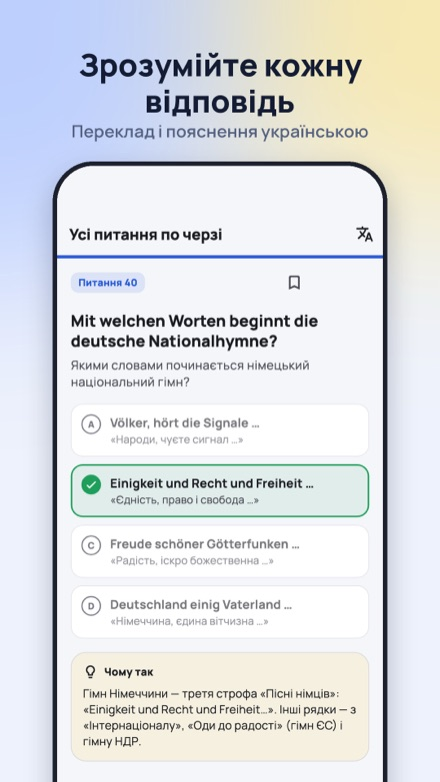
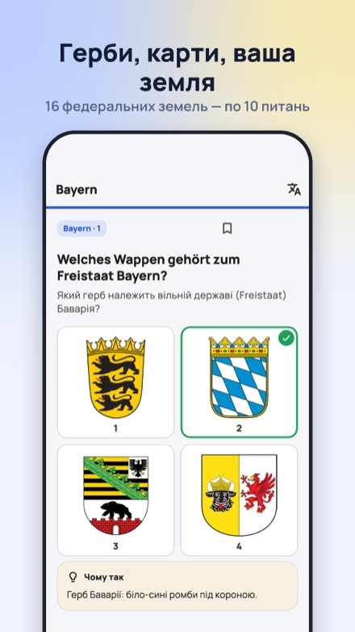
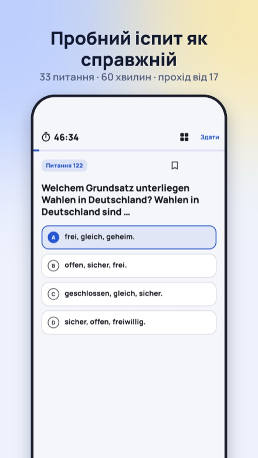
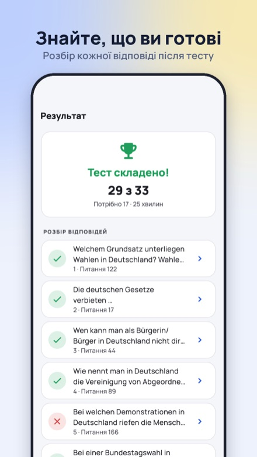
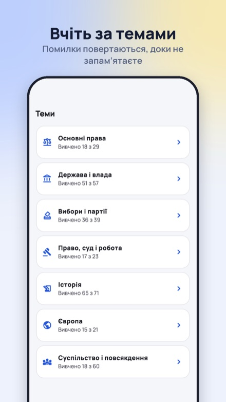

Leben in Deutschland: тест UA
Офіційні питання BAMF для тесту Leben in Deutschland з перекладом і поясненнями українською. Без реклами.
Отримати ранній доступApp Store і Google Play: незабаром






На тесті питання лише німецькою. У застосунку ви бачите оригінальне німецьке питання, переклад українською, а після відповіді — чому правильна саме ця відповідь. Так ви не зазубрюєте, а розумієте.
Безкоштовно
- Усі 300 загальних питань і по 10 для кожної з 16 федеральних земель
- Німецький оригінал і переклад українською
- Пробний іспит: 33 питання, 60 хвилин (один на день)
- Мої помилки, навчання за темами, пошук і закладки
- Без реклами, без акаунта, працює без інтернету
Pro
- Пояснення українською до всіх 460 питань
- Необмежені пробні іспити
- Розумне тренування: спершу помилки, потім нові питання
Без акаунта. Ваші дані лишаються на пристрої. Неофіційний застосунок, не пов'язаний з BAMF. Конфіденційність · Умови · Підтримка